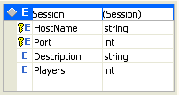
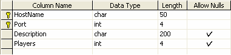
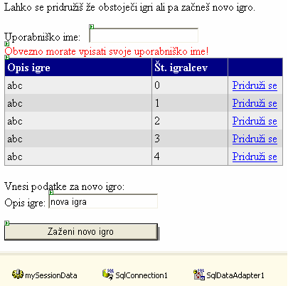

| DX9 + VB.NET tutorial: Zagon večigralskih aplikacij iz internetne strani
Avtor: Kavan
Objavljeno: 15.07.2003, ob 18:09:36.
Ena pomembnih stvari pri igrah, ki se igrajo preko interneta je tudi ta, da se igralci čim lažje najdejo med sabo. Za aplikacije/igre, ki uporabljajo za komunikacijo DirectPlay, so temu namenjene DirectPlay lobby aplikacije. Lobby je aplikacija, katere glavni namen je pomoč pri vzpostavitvi večigralskih iger. Običajno se nahaja na nekem serverju. Tako uporabniki obiščejo lobby tipično preko interneta in bodisi zaženejo novo igro ali pa se priključijo že obstoječi. Lobby ima potem nalogo da zažene igro pri vsakem posamezniku in igra se lahko začne.
Da vse skupaj deluje sta potrebna še dva elementa. Lobby klient je aplikacija, ki skrbi za komunikacijo s serverjem in igro z uporabo lobby klient objekta. Na drugi strani mora zagon iz lobija podpirati tudi sama igra, ki s pomočjo lobbied aplication objekta komunicira z lobby klientom.
Kot ste opazili DirectX ne določa nič drugega kot le način komunikacije med lobby klientom in igro. Kako implementirati lobby server in komunikacijo z lobby klientom je povsem odvisno od vsakega posameznika. Zato si poglejmo kakšen pristop bomo uporabili v tem članku. Naj takoj omenim da se da večino uporabljenih tehnologij zamenjati s kakšnimi drugimi brez da bi to vplivalo na delovanje preostalih komponent.
Pri naši implementaciji se bodo praktično vse komponente nahajale na serverju. Osnoven vir podatkov bo SQL Server podatkovna baza v kateri bomo hranili podatke o trenutno aktivnih sejah (session). Vizualni vmesnik za uporabnike bo v obliki internetne strani, ki bo spisana v ASP.NET. Na strani bo možno zagnati novo igro, videti trenutno aktivne igre in se jim pridružiti. Za lobby klient bomo uporabili No-touch deployment, ki omogoča zaganjanje windows aplikacij iz interneta. To pomeni, da se aplikacija nahaja na serverju in ko jo uporabnik zažene, se le ta prenese na uporabnikov računalnik in se tam zažene. Seveda s tem dobimo mnogo strožje varnostne omejitve, na kar moramo paziti pri implementaciji. Lobby klient bo s serverjem nato komuniciral preko web servica, ki se bo nahajal na serverju. Njegova edina naloga bo posodabljati stanje v bazi na osnovi števila igralcev v posamezni igri. Kot zadnja komponenta nam ostane sama igra. Tukaj bomo zaradi preprostosti za aplikacijo vzeli kar navaden chat program, ki se bo z ostalimi pogovarjal preko DirectPlay na peer to peer arhitekturi.
SQL Server
Pogledali smo si celotno sliko, zdaj pa je čas da začnemo z implementacijo. Če slučajno še nimate SQL Serverja si lahko dobite zastonj verzijo za razvijalce, imenovano MSDE, na Microsoftovi strani. Inštalirajte po navodilih, ki so spodaj na strani in si zapomnite sa geslo, ker ga boste potrebovali pri priključitvi na bazo. Ko imate SQL Server inštaliran lahko zaženemo Visual Studio .NET okolje in s pomočjo Server Explorerja postavimo bazo. Preden pa se tega lotimo moramo narediti dizajn baze. Vse kar potrebujemo shraniti je IP gostitelja igre, njegov port, opis igre in trenutno število igralcev. Pri tem bo kombinacija Ip in port enolična. Zato bomo naredili eno tabelo, ki bo zgledala nekako takole:

računalnik in pod njim SQL Servers. Pod njim se bo nahajal vaš SQL Server. Z desnim klikom pridete do možnosti New Database. Poimenujte databazo LobbyServer, izberite Use SQL Server authentication. Za Login Name napišite sa, pod Password pa ustrezno geslo. Pod dodano bazo boste dobili vozlišče Tables, kjer izberite New Table. Vpišite informacije o kolonah kot vidite na sliki:

Primary key nastavite tako, da izberete prvi dve vrstici in izberete Set Primary Key. Nato zaprite okno in vpišite za ime tabele Session. S tem je postavitev baze končana.
Lobby server
Kot naslednjo stvar bomo postavili internetno stran. Zato bomo najprej ustvarili nov solution. Izberite New->Blank Solution in ga poimenujte LobbySolution. Nato izberite Add Project->New Project in izberite Visual Basic Projects->ASP.NET Web Application. Za lokacijo izberite http://localhost/LobbyServer. Potem odprite WebForm1.aspx. Najprej bomo poskrbeli za dostop do podatkov iz baze. Odprite Server Explorer, poiščite tabelo Session in jo potegnite na stran. Pojavila se bosta SqlConnection1 in SqlDataAdapter1. Dodali bomo možnost, da se ConnectionString za bazo lahko nastavlja iz Web.Config datoteke. Na ta način ni potreno ponovno kompajlanje projekta, če bi prišlo do kakšnih sprememb. To dosežemo tako, da izberem SqlConnection1, in v properties izberemo DynamicProperties. Izberite ConnectionString in v oknu ki se prikaže obkljukajte Map property to a key in configuration file. Če boste pogledali Web.Config, boste videli da se na koncu nahaja vnos podoben temu:
<appSettings>
<!-- User application and configured property settings go here.-->
<!-- Example: <add key="settingName" value="settingValue"/> -->
<add key="SqlConnection1.ConnectionString" value="workstation id=KAVAN;packet size=4096;user id=sa;data source=KAVAN;persist security info=True;initial catalog=LobbyServer" />
</appSettings> |
Zdaj potrebujemo DataSet v katerem bomo hranili podatke v spominu. Z desnim klikom na SqlDataAdapter1 izberito možnost Generate DataSet, ga poimenujte SessionData in pustite možnost Add this dataset to the designer. Preimenujte dobljeni dataset iz SessionData1 v mySessionData. Zdaj moramo poskrbeti še za vizualno predstavitev podatkov. V Properties izberimo DOCUMENT objekt in nastavimo pageLayout na FlowLayout in charset na Unicode. Zdaj na vrhu strani dodajmo napis "Lahko se pridružiš že obstoječi igri ali pa začneš novo igro.". Naprej dodajmo napis "Uporabniško ime: " in dodajmo textbox z imenom txtUsername. Ker ime ne sme biti prazno bomo v naslednji vrstici dodali validator. V toolboxu izberite RequiredFieldValidator. ErrorMessage nastavite na "Obvezno morate vpisati svoje uporabniško ime!" in za ControlToValidate izberite txtUsername. Sledi postavitev tabele s podatki o aktivnih igrah. Dodajte DataGrid. V AutoFormat si izberite željen izgled in nato odprite Property Builder. Na prvi strani izberite za DataSource mySessionData, za DataMember pa tabelo Session. Na strani Columns odznačite Create columns automatically at run time. Dodajte koloni Description, Players in še Template Column. Za kolono Description spremenite Header text v Opis igre, za Players pa v Št. Igralcev. Na strani format izberite Columns in nastavite širine stolpcev na 200px, 100px in 70 px. Template Column bo služila za prikaz povezave za pridružitev igri. Da nastavimo njene lastnosti se vrnimo na stran in spodaj preložimo v HTML način. Poiščite asp:TemplateColumn in napišite naslednje:
<asp:TemplateColumn>
<HeaderStyle Width="70px"></HeaderStyle>
<ItemStyle HorizontalAlign="Center"></ItemStyle>
<ItemTemplate>
<asp:LinkButton runat="server" Text="Pridruži se" CommandName="Join" CausesValidation="true"></asp:LinkButton>
</ItemTemplate>
</asp:TemplateColumn> |
To bo povzročilo, da se bo v vsaki vrstici v zadnji koloni pojavil link za pridružitev igri. Vrnimo se nazaj v Design način. Dodati moramo še možnost za ustvaritev nove igre. Najprej dodajmo napis "Vnesi podatke za novo igro:". Nato "Opis igre: " in textbox z imenom txtDescription. Nastavimo mu še Text na "Nova igra". Na koncu dodajmo še gumb z imenom btnNewGame in napisom "Zaženi novo igro". Vse skupaj bi zdaj moralo izgledati nekako takole:

Manjka nam samo še koda, ki pa je ni veliko. Za Page_Load moramo samo napolniti podatke iz databaze in jih vezati na DataGrid:
Private Sub Page_Load(ByVal sender As System.Object, ByVal e As System.EventArgs) Handles MyBase.Load
SqlDataAdapter1.Fill(mySessionData)
DataBind()
End Sub |
V btnNewGame_Click zaženemo lobby klienta s parametric za zagon nove igre. Pomembno je da naslov zakodiramo, da se bodo pravilno prenesli presledki in razni Unicode znaki.
Private Sub btnNewGame_Click(ByVal sender As System.Object, ByVal e As System.EventArgs) Handles btnNewGame.Click
Response.Redirect( HttpUtility.UrlPathEncode( "http://localhost/LobbyClient/LobbyClient.exe?HOST&" & txtUsername.Text & "&" & txtDescription.Text))
End Sub |
V GamesGrid_ItemCommand preverimo če se je sprožil gumb s CommandName Join in zaženemo lobby klienta s parametric dobljenimi iz ustrezne vrstice v DataSetu. Za HostName moramo uporabiti .Trim da se znebimo odvečnih presledkov.
Private Sub GamesGrid_ItemCommand(ByVal source As Object, ByVal e As System.Web.UI.WebControls.DataGridCommandEventArgs) Handles GamesGrid.ItemCommand
If e.CommandName = "Join" Then
With mySessionData.Session(e.Item.DataSetIndex)
Response.Redirect( HttpUtility.UrlPathEncode("http://localhost/LobbyClient/LobbyClient.exe?JOIN&" & txtUsername.Text & "&" & .HostName.Trim & "&" & .Port))
End With
End If
End Sub |
Zdaj stran sicer že lahko zaženemo, vendar ne bo uporabna dokler ne bomo dokončali lobby klienta. Še prej pa potrebujemo web service s katerim bo lobby klient komuniciral.
Web Service
Dodajte projekt ASP.NET Web Service in ga poimenujte LobbyService. Odprite Service.asmx, kot prej dodajte tabelo Session in spremenite ConnectionString v DynamicProperty. Tokrat bomo v bazo dostopali brez dataseta, zato si bomo sql stavke rahlo priredili. Izberite SqlDataAdapter1 in v properties razširite postavko DeleteCommand. Odprite CommandText da se vam prikaže Query Builder. Spremenite sql stavek v naslednjega:
DELETE FROM Session
WHERE (HostName = @HostName) AND (Port = @Port) |
Ko ga zaprete potrdite, da se parametri na novo zgenerirajo. Isto storite za UpdateCommand, kjer nastavite naslednji sql stavek:
UPDATE Session
SET Description = @Description, Players = @Players
WHERE (HostName = @HostName) AND (Port = @Port) |
Potrebovali bomo še preverjanje, če dan vnos že obstaja v bazi. V ta namen bomo zgradili nov SqlCommand. V toolboxu izberite Data in si potegnite SqlCommand. Preimenujte ga v SqlCountCommand in nastavite CommandText na:
SELECT COUNT(*) AS Expr1
FROM Session
WHERE (HostName = @HostName) AND (Port = @Port) |
Zdaj pojdimo v kodo kjer bomo dodali web metodo. To so metode, ki so vidne navzven uporabnikom web servica. Najprej bomo preverili, če dan vnos že obstaja v bazi, potem pa ga bomo po potrebi dodali, spremenili ali pa izbrisali. Koda naj izgleda takole:
Public Sub UpdateHost(ByVal hostname As String, ByVal port As Integer, ByVal description As String, ByVal players As Integer)
SqlConnection1.Open()
Dim count As Integer
With SqlCountCommand
.Parameters("@HostName").Value = hostname
.Parameters("@Port").Value = port
'dobimo podatek o tem, ce je ta seja že v bazi
count = .ExecuteScalar()
End With
If count = 0 Then
If players > 0 Then
'ce seje ni v bazi potem dodamo nov vnos
With SqlDataAdapter1.InsertCommand
.Parameters("@HostName").Value = hostname
.Parameters("@Port").Value = port
.Parameters("@Description").Value = description
.Parameters("@Players").Value = players
.ExecuteNonQuery()
End With
End If
Else
If players > 0 Then
'ce seje ni v bazi in je seja še vedno aktivna popravimo vnose v bazi
With SqlDataAdapter1.UpdateCommand
.Parameters("@HostName").Value = hostname
.Parameters("@Port").Value = port
.Parameters("@Description").Value = description
.Parameters("@Players").Value = players
.ExecuteNonQuery()
End With
Else
'ce je seja zakljucena jo izbrišemo iz baze
With SqlDataAdapter1.DeleteCommand
.Parameters("@HostName").Value = hostname
.Parameters("@Port").Value = port
.ExecuteNonQuery()
End With
End If
End If
SqlConnection1.Close()
End Sub |
Če želite lahko web service zaženete (ne pozabite nastavit Set as Startup Project), da boste preiskusili kako deluje. Dobili boste web vmesnik, ki omogoča vizualno komunikacijo s servicom, seveda pa bo naš lobby klient dostopal da servica preko programskega vmesnika.
Lobby klient
Dodajte nov Windows Application projekt in ga poimenujte LobbyClient. V Solution Explorerju boste z desnim klikom na projekt prišli do možnosti Add Web Reference. Izberite Web services on the local machine in izberite prej narejen Service. Za Web reference name si izberite ime LobbyService. Tukaj se prvič srečamo z DirectX-om, zato si v reference dodajte Microsoft.DirectX in Microsoft.DirectX.DirectPlay. Ta aplikacije ne bo imela vizualnega vmesnika. Da pa bo uporabnik vseeno vedel, da obstaja bomo postavili ikono v System tray. Odprite form in iz toolboxa izberite NotifyIcon. Izberite si ikono in pod text vpišite DirectPlay Lobby Client. Dodajmo še ContextMenu, mu dodajmo vrstico Zapri in ga nastavimo v properties za NotifyIcon. Koda za menu naj bo enostaven klic Me.Close().
Preden se lotimo stvari povezanih z DirectX-om moramo opraviti še nekaj detajlov v zvezi s prenosom parametrov v aplikacijo. Glede tega se ne bomo spuščali v podrobnosti in bom na koncu samo povedal kaj je potrebno storiti, da bo stvar delovala. Če koga No-Touch Deployment zanima bolj v detajle si lahko prebere članke na naslednjih straneh:
http://msdn.microsoft.com/library/default.asp?url=/library/en-us/dnforms/html/winforms05152003.asp
http://.../default.asp?url=/library/en-us/dv_vstechart/html/vbtchno-touchdeploymentinnetframework.asp
http://www.ftponline.com/vsm/2003_09/magazine/columns/gettingstarted/default_pf.asp
Potrebovali bomo priloženi ConfigHandler.dll, ki ga lahko dobite tudi na prvi od navedenih strani. Dodajte ga pod reference in dodajte import stavek na začetek kode:
V Form1_Load bomo dobili parametre na naslednji način:
|
Dim args As String() = WebCommandLineHelper.GetCommandLineArgs(Nothing) |
Tako, zdaj pa se res lahko lotimo DirectPlay-a. Vsaka igra, ki uporablja DirectPlay potrebuje enoličen GUID. To je oznaka preko katere aplikacije ugotovijo, da gre na drugi strani za isto vrsto aplikacije. Tudi Lobby klient potrebuje informacijo o igri, ki jo mora zagnati, zato si že kar zdaj zgenerirajmo GUID, ki ga bo naša igra uporabljala. Tega dobimo tako, da v menuju izberemo Tools->Create GUID, izberemo Registry Format in damo copy. V našem primeru bomo uporabili GUID {49153AC8-3905-4c23-884D-95E0CBFCBAF0}. Potrebovali bomo še objekt tipa Lobby.Client, identifikacijsko številko igre in informacijo o tem ali naša aplikacija gosti igro ali pa se ji je le pridružila. Zato dodajmo naslednje deklaracije:
Private appGuid As New Guid("{49153AC8-3905-4c23-884D-95E0CBFCBAF0}")
Private clientID As Integer
Private lobbyClient As New Lobby.Client
Private isHost As Boolean |
V Form1_Load moramo naslednjo stvar registrirati handlerje za evente, ki jih želimo poslušati:
AddHandler lobbyClient.Connect, AddressOf lobbyConnect
AddHandler lobbyClient.ConnectionSettings, AddressOf lobbyConnectionSettings
AddHandler lobbyClient.Disconnect, AddressOf lobbyDisconnect
AddHandler lobbyClient.SessionStatus, AddressOf lobbySessionStatus |
Nato se na osnovi dobljenih parametrov odločimo ali gostimo igro ali pa se ji priključujemo. V obeh primerih bomo morali nastaviti kopico informacij, ki jih bo igra potrebovala zato, da se bo znala povezati. Vse te podatke nastavimo v Lobby.ConnectInformation. Ker gre zgolj za tehnične detajle si raje oglejmo kodo, ki bo pokazala kaj je treba storiti:
Select Case args(0)
Case "HOST"
isHost = True
Dim username As String = args(1)
Dim description As String = args(2)
'pripravimo podatke, ki jih aplikacija potrebuje za postavitev povezave
Dim lci As Lobby.ConnectInformation
lci.Flags = Lobby.ConnectFlags.LaunchNotFound
lci.GuidApplication = appGuid
lci.UseConnectionSettings = True
With lci.ConnectionSettings
.Flags = Lobby.ConnectionSettingsFlags.Host
.PlayerName = username
.ApplicationDescriptionChanged.SessionName = description
'obvezno nastaviti GUID tudi tukaj, sicer ne dela
.ApplicationDescriptionChanged.GuidApplication = appGuid
'za naslov moramo nastaviti service providerja in port
Dim deviceAddress As New Address
deviceAddress.ServiceProvider = Address.ServiceProviderTcpIp
deviceAddress.AddComponent(Address.KeyPort, 2513)
.SetDeviceAddresses(New Address() {deviceAddress})
End With
'ustvarimo aplikacijo in ji posredujemo podatke
'timeout je 30 sekund
clientID = lobbyClient.ConnectApplication(lci, 30000, Nothing)
Case "JOIN"
Dim username As String = args(1)
Dim hostname As String = args(2)
Dim port As Integer = args(3)
Dim lci As Lobby.ConnectInformation
lci.Flags = Lobby.ConnectFlags.LaunchNotFound
lci.GuidApplication = appGuid
lci.UseConnectionSettings = True
With lci.ConnectionSettings
.PlayerName = username
'v primeru da se prikljucujemo obstojeci seji moramo nastaviti podatke o hostu
'potrebujemo service providerja, hostname in port
.HostAddress = New Address
.HostAddress.ServiceProvider = Address.ServiceProviderTcpIp
.HostAddress.AddComponent(Address.KeyHostname, hostname)
.HostAddress.AddComponent(Address.KeyPort, port)
.ApplicationDescriptionChanged.GuidApplication = appGuid
'tudi tu potrebujemo device address
Dim deviceAddress As New Address
deviceAddress.ServiceProvider = Address.ServiceProviderTcpIp
.SetDeviceAddresses(New Address() {deviceAddress})
End With
'ustvarimo aplikacijo in ji posredujemo podatke
'timeout je 30 sekund
clientID = lobbyClient.ConnectApplication(lci, 30000, Nothing)
End Select |
Sledi še koda za vse evente. Web servicu pošiljamo podatke samo v primeru ko mi gostimo igro, ostali le sporočijo lobby klientu ko je potrebno da se le ta zapre. Ker gre tukaj za workaround zaradi (zgleda) buga v trenutni verziji managed DirectX-a bom napisal le kako bi zgledala koda za enega od eventov, če bi stvar delala tako kot bi morala. Toliko da vidite na kakšen način se kliče funkcije na web servicu. Za detajle o implementacije pa si poglejte priloženo izvorno kodo.
Private Sub lobbyConnect(ByVal sender As Object, ByVal e As Lobby.ConnectEventArgs)
clientID = e.Message.ConnectionHandle
If isHost Then
Dim service As New LobbyService.LobbyService service.UpdateHost(addr.GetComponentString(Address.KeyHostname), addr.GetComponentInteger(Address.KeyPort), e.Message.ConnectionSettings.ApplicationDescriptionChanged.SessionName, e.Message.ConnectionSettings.ApplicationDescriptionChanged.CurrentPlayers)
End If
End Sub |
Ostalo nam je še nekaj detajlov v zvezi z No-Touch Deployment. Le ti so potrebni zato da lahko sprejemamo parametre v aplikacijo. Na serverju si pripravite direktorij, kamor boste postavili klienta in ga poimenujte LobbyClient. Vanj dajte LobbyClient.exe in ConfigHandler.dll, ta dll pa dajte še v poddirektorij bin. V mapi LobbyClient ustvarite novo datoteko Web.Config, ki naj vsebuje naslednji zapis:
<configuration>
<system.web>
<httpHandlers>
<!-- map .exe and .exe?blah.config files to our handler -->
<add verb="*" path="*.exe" type="Genghis.Web.ConfigFileHandler, ConfigHandler" />
<!-- allow .config files but disable web.config files -->
<remove verb="*" path="*.config" />
<add verb="*" path="web.config" type="System.Web.HttpForbiddenHandler"/>
</httpHandlers>
</system.web>
</configuration> |
Na direktorij LobbyClient desno kliknite in izberite Sharing and Security. Izberite Web Sharing in izberite možnost Share this folder. Alias pustite LobbyClient, prav tako pustite ostale možnosti kot so izbrane. Zdaj potrebujemo še nekaj nastavitev v IIS. Pojdite v Control Panel->Administrative Tools->Internet Information Services. Pod Web Sites->Default Web Sites poiščite LobbyClient in izberite properties. Najprej pojdite v Configuration->Mappings. Izberite .aspx, dajte edit in si skopirajte naslov executable, ki zgleda takole: C:\WINDOWS\Microsoft.NET\Framework\v1.1.4322\aspnet_isapi.dll. Nato dajte add, pastajte ta naslov in nastavite extension na .exe. Vrnite se na properties in v Directory Security izberite edit. Omogočite Anonymous Access in pustite da IIS kotrolira password. Vse skupaj je nadležno, vendar deluje. Preostane nam le še zadnja komponenta, to je chat program.
Chat aplikacija
Vse skupaj traja že dolgo časa vendar brez te aplikacije ne moremo nič preizkusiti. Ker članek ni namenjen komunikaciji preko DirectPlay bomo pogledali samo stvari povezane lobijem, ostalo pa prepustili bralcu naj si ogleda v izvorni kodi. Vseeno pa si poglejmo rahel oris vsega skupaj. Ob zagonu preverimo, če smo bili zagnani iz lobija in se z dobljenimi podatki povežemo v sejo ali pa ustvarimo novo sejo. Hranimo seznam igralcev, ki so prisotni v igri in ko dobivamo sporočila od soigralcev jih formatiramo in izpišemo v textboxu.
Po inicializaciji Peer objekta in registriranju handlerjev ustvarimo objekt tipa Lobby.Application, da ugotovimo če smo bili zagnani iz lobija. To ugotovimo po tem, če je identifikacijska številka za komunikacijo z lobby klientom različna od nič. Registrirati moramo še LobbyConnectionHandler, ker s pomočjo tega eventa sporočimo lobby klientu da želimo tudi v naprej komunicirati z njim.
lobbyApp = New Lobby.Application(lobbyID)
AddHandler lobbyApp.Connect, AddressOf LobbyConnectHandler |
Koda za event handler naj bo taka:
Public Sub LobbyConnectHandler(ByVal sender As Object, ByVal args As Lobby.ConnectEventArgs)
Try
'registriramo se z lobby klientom, da bomo lahko komunicirali z njim
lobbyID = args.Message.ConnectionHandle
Peer.RegisterLobby(lobbyID, lobbyApp)
Catch ex As Exception
MessageBox.Show("Prišlo je do napake!" & vbCrLf & ex.ToString)
Me.Dispose()
Exit Sub
End Try
End Sub |
Zdaj nam še preostane da od lobby klienta dobimo informacije o povezav, ki jo moramo vzpostaviti kar stori naslednja koda:
Try
'zahtevamo podatke o seji, ki jo moramo ustvariti oz. se ij pridružiti
settings = lobbyApp.GetConnectionSettings(lobbyID)
sessionName = settings.ApplicationDescriptionChanged.SessionName
'nastavimo ime našega igralca
Dim pi As PlayerInformation
pi.Name = settings.PlayerName
Peer.SetPeerInformation(pi, SyncFlags.PeerInformation)
'ce je nastavljen Host flag, potem moramo ustvariti novo sejo
If 0 <> (settings.Flags And Lobby.ConnectionSettingsFlags.Host) Then
'hostamo novo sejo
Peer.Host(settings.ApplicationDescriptionChanged, settings.GetDeviceAddresses())
'prikažemo v UI, da smo host
Me.Text &= " (HOST)"
'shranimo naslov, na katerega se morajo prikljuciti ostali igralci
addr = Peer.GetLocalHostAddresses(LocalAddressFlags.Combined)(0)
'zapominmo si, da smo host
isHost = True
Else
'povežemo se v že obstojeco sejo
Peer.Connect(settings.ApplicationDescriptionChanged, settings.HostAddress, settings.GetDeviceAddresses()(0), Nothing, ConnectFlags.Sync)
End If
Catch ex As Exception
MessageBox.Show("Prišlo je do napake!" & vbCrLf & ex.ToString)
Me.Dispose()
Exit Sub
End Try |
Sporočanje stanja lobby klientu dosežemo z uporabo klicev lobbyApp.SetConnectionSettings in lobbyApp.UpdateStatus, ki si jih poglejte v izvorni kodi (zgoraj omenjeni workaround).
Inštalacija chat programa
Preostane name še zadnja stvar. To je registriranje naše aplikacije, da sporoči DirectX-u da podpira zagon iz lobija. V ta namen bomo izdelali custom action, ki bo pri inštalaciji programa na uporabnikov računalnik zraven še registriral našo aplikacijo. Najprej z desnim klikom na DirectPlayApp projekt (naša chat aplikacija) izberimo Add->Add New Item. Izberimo Installer Class in ga poimenujmo LobbyInstaller. V njegovi kodi moramo overridati funkciji Install in Uninstall. Iz setup programa bomo dobili informacijo o lokaciji inštalacije, ki jo bomo uporabili da bomo DirectPlay-u povedali kje se naša aplikacija nahaja. Vse skupaj ni nič posebnega zato si kar oglejmo kodo:
Public Overrides Sub Install(ByVal stateSaver As System.Collections.IDictionary)
MyBase.Install(stateSaver) 'obvezno poklicati base funkcijo
'dobimo parametre nastavljene v Setup aplikaciji (CustomActionData)
Dim ExecutablePath As String = Me.Context.Parameters.Item("ExecutablePath")
Dim AppGUID As New Guid("{49153AC8-3905-4c23-884D-95E0CBFCBAF0}")
Dim lobbyApp As New Lobby.Application
Dim desc As New Lobby.ProgramDescription
desc.ApplicationName = "Testna aplikacija"
desc.GuidApplication = AppGUID
'pot razdremo v direktorij in ime aplikacije
Dim index As Integer = ExecutablePath.LastIndexOf("\"c)
desc.ExecutablePath = ExecutablePath.Substring(0, index)
desc.ExecutableFilename = ExecutablePath.Substring((index + 1))
Try
'registriramo program
lobbyApp.RegisterProgram(desc)
Catch ex As Exception
MessageBox.Show("Prišlo je do napake!" & vbCrLf & ex.ToString)
Return
End Try
End Sub
Public Overrides Sub Uninstall(ByVal savedState As System.Collections.IDictionary)
MyBase.Uninstall(savedState) 'obvezno poklicati base funkcijo
Dim AppGUID As New Guid("{49153AC8-3905-4c23-884D-95E0CBFCBAF0}")
Dim lobbyApp As New Lobby.Application
Try
'unregistriramo program
lobbyApp.UnregisterProgram(AppGUID)
Catch ex As Exception
MessageBox.Show("Prišlo je do napake!" & vbCrLf & ex.ToString)
Return
End Try
End Sub |
Zdaj potrebujemo še Setup program. Izberite Add Project->New Project in ustvarite Setup and Deployment Projects->Setup Project. Z desnim klikom na projekt izberite Add->Project Output. Izberite projekt DirectPlayApp in primary output. Pod Detected Dependencies excludajte vse DirectX dll-je. V properties si nastavite želene nastavitve nato pa izberite View->Custom Actions. Z desnim klikom izberite Add Custom Action. Izberite Application Folder->Primary output from DirectPlayApp. Na vseh štirih postavkah custom actions se vam bo pojavil vnos za DirectPlayApp. Vsakega posebej izberite in nastavite CustomActionData na /ExecutablePath="[TARGETDIR]DirectPlayApp.exe". To bo posredovalo lokacijo inštalacije našega exe programa installer classu, ta pa ga potem uporabi za registracijo aplikacije.
Ne boste verjeli, ampak stvar je končana. Še desni klik na setup projekt in Install. Ko bo igra inštalirana nastavite startup projekt na LobbyServer in stvar poženite. Lahko pa greste tudi v explorer in napišete naslov http://localhost/LobbyServer/WebForm1.aspx. Zakaj Internet Explorer? Žal dela No-Touch Deployment zaenkrat samo v kombinaciji z njim. Za kakšne bolj prenosljive projekte pa bo potrebno uporabiti kakšno drugo tehnologijo.
Izvorno kodo dobite tukaj.
 O avtorju
Dušan "Kavan" Jan
Dušan je glavni programer skupine 3D-Level in se večinoma ukvarja s programiranjem grafike v DirectX-u in umetne inteligence. Njegovo dosedanje delo obsega izdelavo 3D modelirnega programa in grafičnega pogona ter raziskave na področju mehke logike in genetskega programiranja. Trenutno je študent uporabne matematike na FMF in načrtuje nadaljevati študij na področju umetne inteligence. Njegovi največji uspehi so dvakratna udeležba na mednarodni matematični olimpijadi (na Tajvanu in v Romuniji), član ekipe na regijskem tekmovanju v programiranju ACM (na Poljskem) in pohvala na študentskem mednarodnem matematičnem tekmovanju (na Poljskem).
|